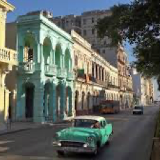
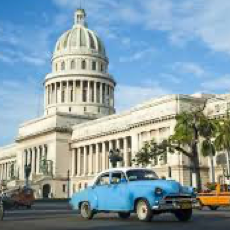
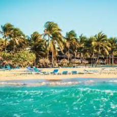
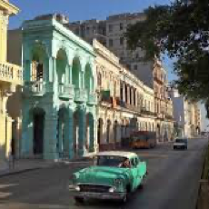
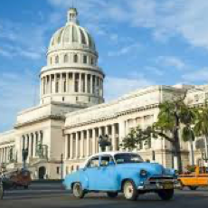
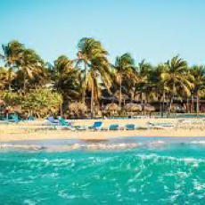

WELCOME TO IP-TV
Это самый современный и выгодный вариант с точки зрения «качество+возможности». В дом приходит по тому же кабелю, что и интернет, поставляет огромное количество местных и зарубежных каналов, всегда высокое качество картинки, полноценные возможности SMART-TV.

ТЫСЯЧИ КАНАЛОВ за
Расшифровывается IPTV как Internet Protocol Television. То есть, как легко можно догадаться даже без знания иностранных языков — Телевидение по интернет протоколу.
- Подключение 2490 тг!
- Первый месяц в подарок!
- Единоразовая настройка!
ЛУЧШЕЕ КАЧЕСТВО
Новая эра телевидения позволяет воспроизводить сигнал высшего качества.
- Подключение 2490 тг.
- Первый месяц
- третий плюс


 




